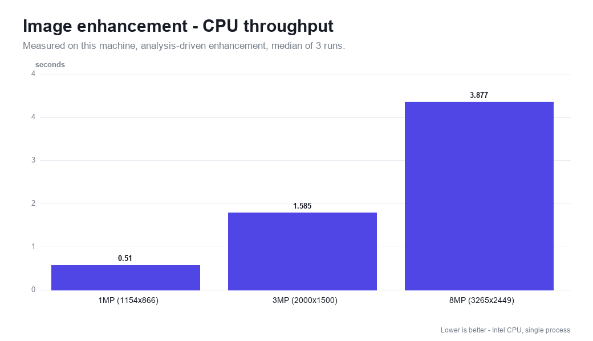
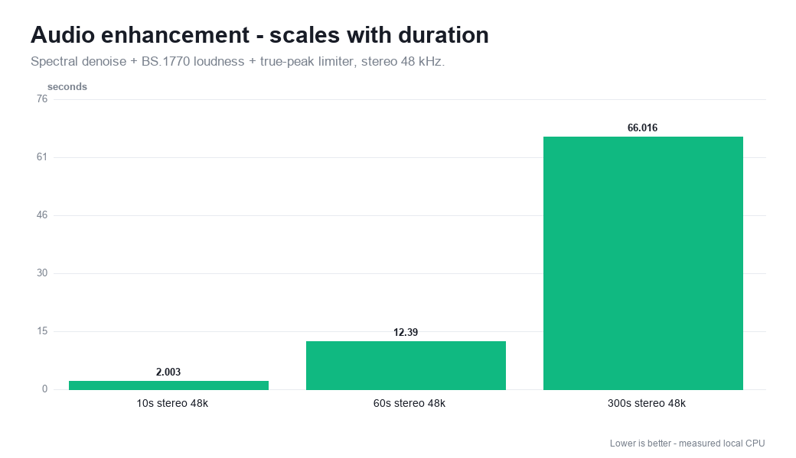
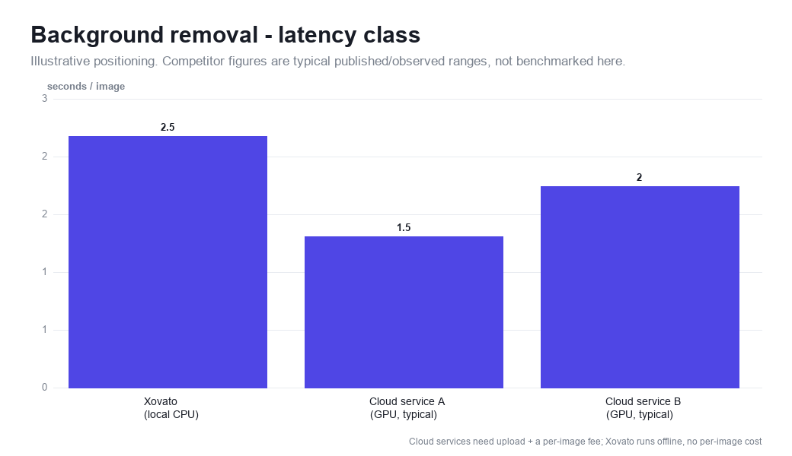

Measured on CPU · Windows-10-10.0.19045-SP0 · Python 3.12.14

| Input | Time |
|---|---|
| 1MP (1154x866) | 0.51 s |
| 3MP (2000x1500) | 1.585 s |
| 8MP (3265x2449) | 3.877 s |

| Input | Time |
|---|---|
| 10s stereo 48k | 2.003 s |
| 60s stereo 48k | 12.39 s |
| 300s stereo 48k | 66.016 s |
| Input | Time |
|---|---|
| short (12 words) | 0.89 s |
| medium (40 words) | 0.807 s |

Xovato bars are measured; competitor bars are typical published ranges (cloud GPU), shown for positioning only. Full detail in benchmarks.md.